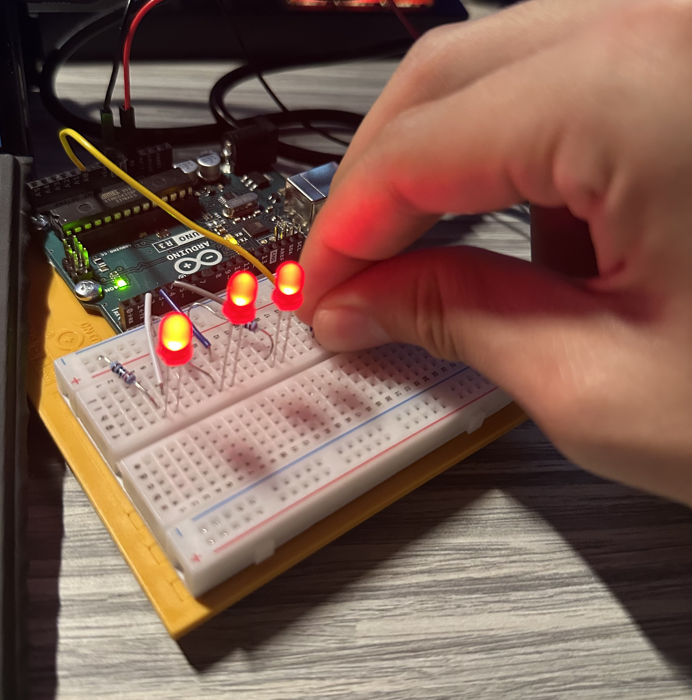

Arduino HW 3 - Love-O-Meter
IGME 470
This project was my most frustrating one yet and required some debugging, but ultimately taught me how to adapt and problem solve. The goal of the project was to create a "Love-O-Meter" that lights up a series of LEDs based on the input from a temperature sensor.
My sensor was reporting that the temperature was -25 degrees Celsius, which was causing the LEDs to not light up as expected. After some debugging and testing, I noticed that without the sensor, the lights would light up, so the lights were not the issue. I attempted different configurations for the sensor but none worked. In the end, I used a somewhat band-aid solution by adjusting the threshold in the code to account for the low reading.
I swear my room isn't that cold!
